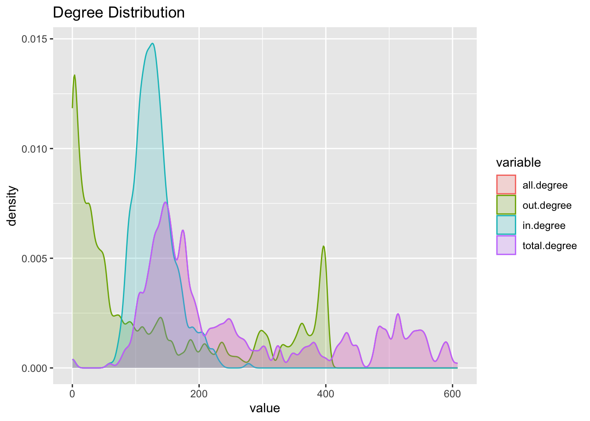
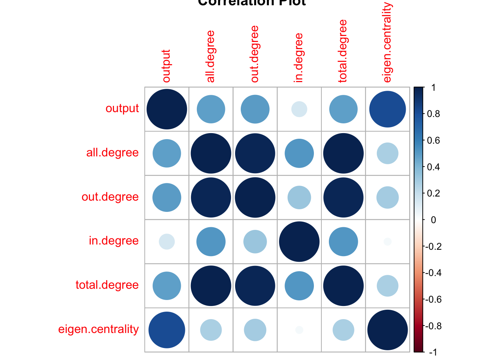
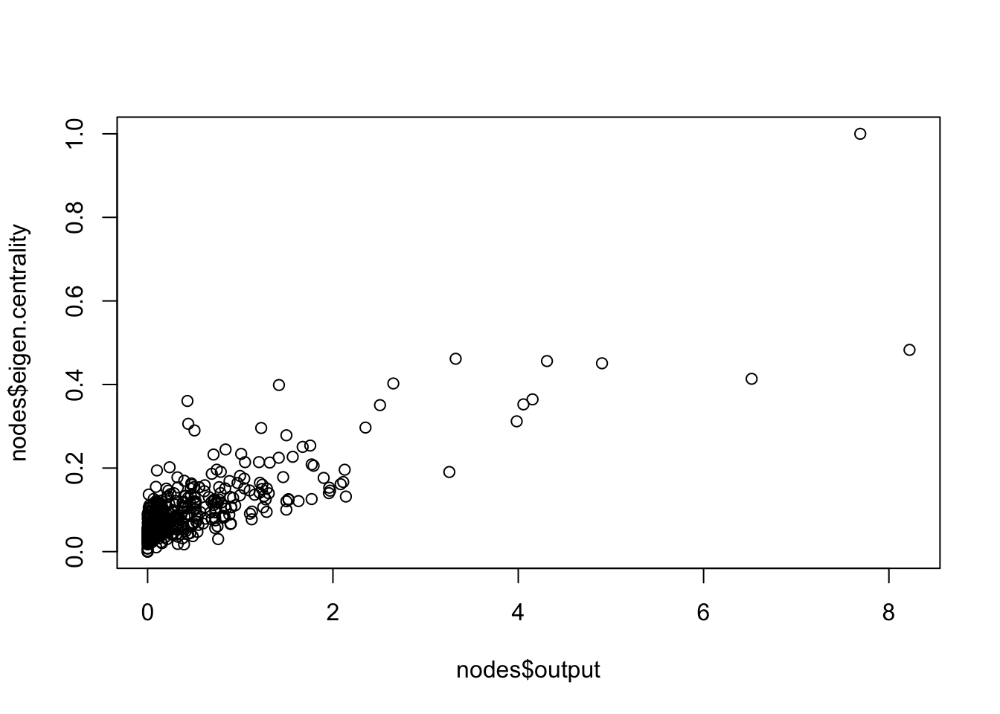
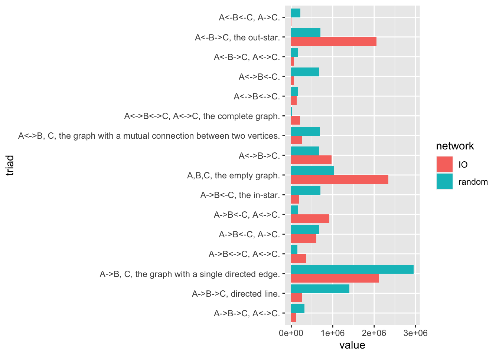
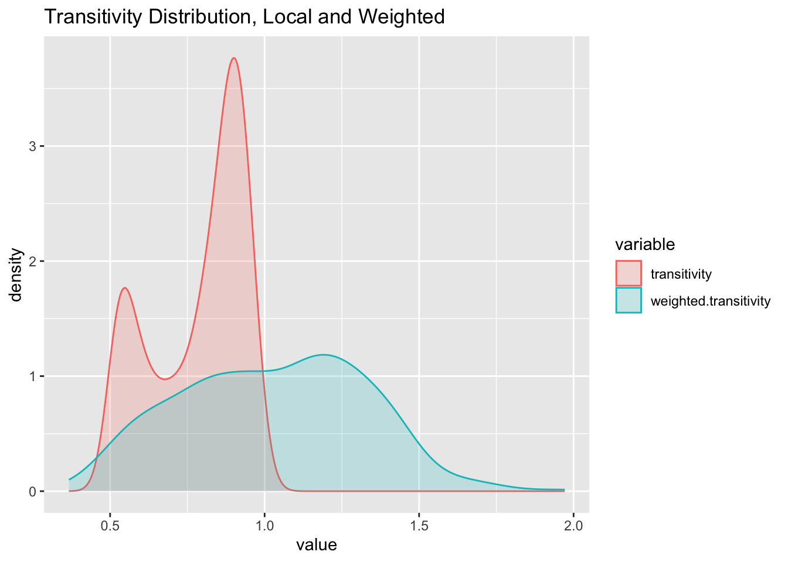
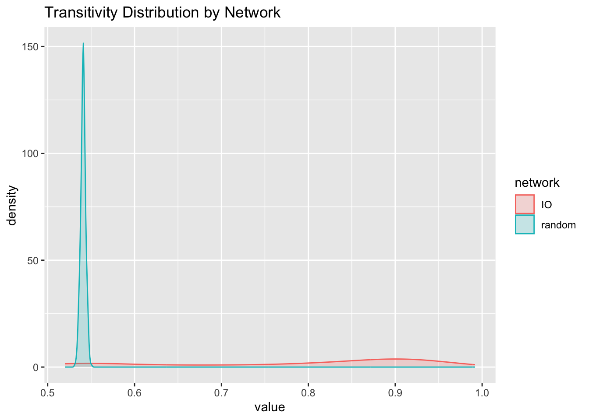
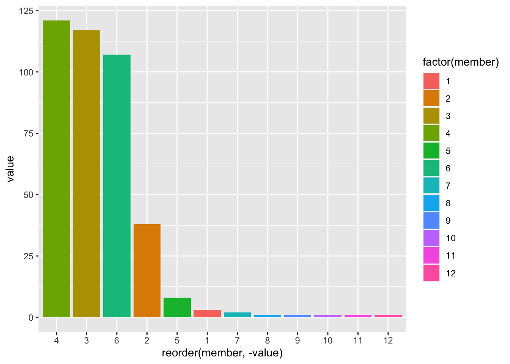
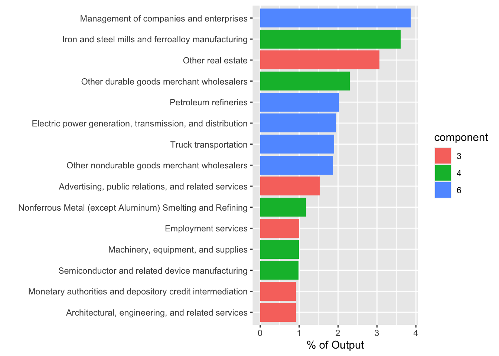
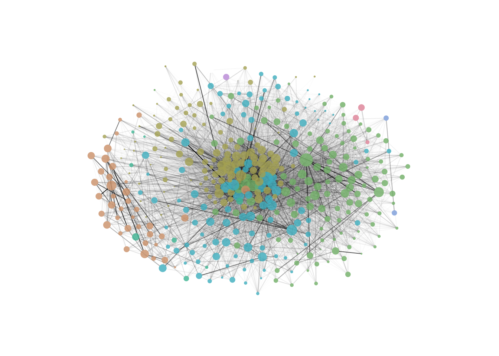

library(readxl)
library(tidyverse)
library(igraph)
library(reshape2)
knitr::opts_chunk$set(echo = TRUE, warning = FALSE, message=FALSE)Week 2/3/4 Challenge Solutions
challenge_2
challenge_3
challenge_4
solution
Analyzing the Complex Structure of the Economic Input-Output Network of the US, 2012
US Bureau of Economic Analysis - Input-Output Network

Package Load
Before starting, the necessary packages should be loaded. For this analysis, we are going to use igraph, but other options can be contemplated depending on your needs.
Data Preparation
Motivated by the recent shocks on global supply chains, we are interested in analyzing and visualizing the complex structure of the inter-industry economic transactions of the United States. In economic analysis, this information is contained in the so-called input-output table, which many national and international databases document at different levels of industry aggregation (26, 50, 405, 800+…). From a network perspective, an input-output table is an asymmetric, weighted adjacency matrix where the weights correspond to the input value required to produce a unit of output, that is, its direct requirements.
Data is directly loaded reading a xlsx file using the readxl package. Note that the file features two years, 2007 and 2012.
filename <- '../posts/_data/US_input_output_table_2007_and_2012.xlsx' # while on console
filename <- '_data/US_input_output_table_2007_and_2012.xlsx' # while rendering
data <- read_xlsx(filename, sheet = "2012")First of all, we explore the data: its dimensions and the values at its corners so we can extract the adjacency matrix.
dim(data)[1] 413 407data[1 : 10, 1 : 10]commodities <- unlist(data[5 : 409, 2])
industries <- unlist(data[3, 3 : 407])In this particular case, each column of the table displays the values of 405 commodities required by a specific industry. The input-output table is commodity-by-industry with commodities in the rows and industries in the columns, in a way that the list of commodities and industries do not necessarily match so we need to harmonize them to construct the adjacency matrix.
table(commodities %in% industries)
FALSE TRUE
4 401 table(industries %in% commodities)
FALSE TRUE
4 401 io.table <- data[5 : 409, 3 : 407] %>% as.matrix
io.table <- apply(io.table, 1, as.numeric) %>% t
colnames(io.table) <- industries
rownames(io.table) <- commodities
sectors <- industries[industries %in% commodities]
io.table <- io.table[sectors, sectors]
go <- rowSums(io.table)Graph Analysis
Once the adjacency matrix is constructed, we can now analyze and visualize the graph:
g <- graph_from_adjacency_matrix(io.table, mode = 'directed', weighted = TRUE, add.rownames = TRUE)Size
The network has the same amount of vertices than the number of rows and columns of the adjacency matrix:
vcount(g)[1] 401and the following number of edges,
ecount(g)[1] 51860The network is relatively sparse:
table(io.table > 0) / length(sectors) ^ 2
FALSE TRUE
0.6775393 0.3224607 io.table[io.table < 0] <- 0
prob <- (table(io.table > 0) / length(sectors) ^ 2)['TRUE'] Degree
It is useful to compute the different degree concepts of the network and observe its distributions:
nodes <- data.frame(name = V(g)$name,
output = rowSums(io.table),
all.degree = degree(g, mode = 'all'),
out.degree = degree(g, mode = 'out'),
in.degree = degree(g, mode = 'in'),
total.degree = degree(g, mode = 'total'),
eigen.centrality = evcent(g)$vector)
head(nodes)nodes %>% melt %>% filter(variable != 'output' & variable != 'eigen.centrality') %>%
ggplot(aes(x = value, fill = variable, color = variable)) + geom_density(alpha = .2, bw = 5) +
ggtitle('Degree Distribution')
corrplot :: corrplot(cor(nodes[ , -1]), title = 'Correlation Plot')
kableExtra :: kable(apply(nodes[ , -1], 2, function (x) nodes$name[order(x, decreasing = TRUE)][1 : 10]))| output | all.degree | out.degree | in.degree | total.degree | eigen.centrality |
|---|---|---|---|---|---|
| Management of companies and enterprises | Nonresidential maintenance and repair | Electric power generation, transmission, and distribution | Scientific research and development services | Nonresidential maintenance and repair | Iron and steel mills and ferroalloy manufacturing |
| Iron and steel mills and ferroalloy manufacturing | Full-service restaurants | Water, sewage and other systems | Hospitals | Full-service restaurants | Management of companies and enterprises |
| Other real estate | Wired telecommunications carriers | Professional and commercial equipment and supplies | State and local government other services | Wired telecommunications carriers | Plastics material and resin manufacturing |
| Other durable goods merchant wholesalers | Limited-service restaurants | Machinery, equipment, and supplies | Other amusement and recreation industries | Limited-service restaurants | Petroleum refineries |
| Petroleum refineries | Services to buildings and dwellings | Other durable goods merchant wholesalers | Management of companies and enterprises | Services to buildings and dwellings | Other durable goods merchant wholesalers |
| Electric power generation, transmission, and distribution | Architectural, engineering, and related services | Grocery and related product wholesalers | Junior colleges, colleges, universities, and professional schools | Architectural, engineering, and related services | Other real estate |
| Truck transportation | Wireless telecommunications carriers (except satellite) | Petroleum and petroleum products | Nonresidential maintenance and repair | Wireless telecommunications carriers (except satellite) | Other basic organic chemical manufacturing |
| Other nondurable goods merchant wholesalers | Management of companies and enterprises | Other nondurable goods merchant wholesalers | Accommodation | Management of companies and enterprises | Petrochemical manufacturing |
| Plastics material and resin manufacturing | Waste management and remediation services | Wholesale electronic markets and agents and brokers | Civic, social, professional, and similar organizations | Waste management and remediation services | Electric power generation, transmission, and distribution |
| Advertising, public relations, and related services | Other durable goods merchant wholesalers | Air transportation | Architectural, engineering, and related services | Other durable goods merchant wholesalers | Custom roll forming |
# top.nodes <- nodes[order(nodes$degree, decreasing = T), ]
# top.nodes[1 : 10, ] %>% ggplot(aes(x = out.degree, y = reorder(name, degree))) + geom_bar(stat = 'identity')
plot(nodes$output, nodes$eigen.centrality)
Dyad Census
A dyad census confirms the input-output network is quite sparse. We could compare this dyad census with the null version of a random network with a similar number of edges:
dyad.census(g)$mut
[1] 10041
$asym
[1] 31430
$null
[1] 38729g.random <- erdos.renyi.game(length(sectors), prob, directed = TRUE)
ecount(g.random)[1] 51650rbind(IO = dyad.census(g), random = dyad.census(g.random)) mut asym null
IO 10041 31430 38729
random 8286 35078 36836Mutual and null dyads are higher for the IO network, while asymmetric dyads are more common for the random network. How do we interpret these results?
Triad Census
triad.labels <- c("A,B,C, the empty graph.",
"A->B, C, the graph with a single directed edge.",
"A<->B, C, the graph with a mutual connection between two vertices.",
"A<-B->C, the out-star.",
"A->B<-C, the in-star.",
"A->B->C, directed line.","A<->B<-C.",
"A<->B->C.",
"A->B<-C, A->C.",
"A<-B<-C, A->C.",
"A<->B<->C.",
"A<-B->C, A<->C.",
"A->B<-C, A<->C.",
"A->B->C, A<->C.",
"A->B<->C, A<->C.",
"A<->B<->C, A<->C, the complete graph.")
triad.census.data <- data.frame(label = triad.labels, IO = triad.census(g), random = triad.census(g.random)) %>% melt
colnames(triad.census.data) <- c('triad', 'network', 'value')
triad.census.data %>% ggplot(aes(x = value, y = triad, fill = network)) + geom_bar(stat = 'identity', position = 'dodge')
Striking features of the above plot is the over-representation of out-stars, complete, and empty graphs in the input-output case relative to the random graph, while there is an under-representation of graphs with single directed edges and directed lines.
Transitivity
transitivity(g, type = 'global')[1] 0.6517081transitivity(g.random, type = 'global')[1] 0.5408801nodes$transitivity <- transitivity(g, type = 'local')
nodes$weighted.transitivity <- transitivity(g, type = 'weighted')
melt(nodes) %>% filter(variable == 'transitivity' | variable == 'weighted.transitivity') %>%
ggplot(aes(x = value, fill = variable, color = variable)) + geom_density(alpha = 0.2) +
ggtitle('Transitivity Distribution, Local and Weighted')
rbind(data.frame(network = 'IO', value = transitivity(g, type = 'local')),
data.frame(network = 'random', value = transitivity(g.random, type = 'local'))) %>%
ggplot(aes(x = value, fill = network, color = network)) + geom_density(alpha = 0.2) +
ggtitle('Transitivity Distribution by Network')
Component Structure
E(g)$weight[E(g)$weight < 0] <- 0
diameter(g)[1] 0.129843diameter(g.random)[1] 2farthest_vertices(g)$vertices
+ 2/401 vertices, named, from 3c3e69d:
[1] Dog and cat food manufacturing Printing ink manufacturing
$distance
[1] 0.129843wc.g <- cluster_walktrap(g)
member <- membership(wc.g)
nodes$member <- member
table(member)member
1 2 3 4 5 6 7 8 9 10 11 12
3 38 117 121 8 107 2 1 1 1 1 1 table(member) %>% melt %>% ggplot + geom_bar(aes(x = reorder(member, - value), y = value, fill = factor(member)), stat = 'identity')
# Percentages of Output of each Component
go.wc.percent <- 100 * sapply(names(table(member)), function(x) sum(go[member==x]))/sum(go)
x <- 4
ord.x <- order(go[member == x], decreasing = T)[1:15]
V(g)$name[member == x][ord.x] [1] "Iron and steel mills and ferroalloy manufacturing"
[2] "Other durable goods merchant wholesalers"
[3] "Nonferrous Metal (except Aluminum) Smelting and Refining"
[4] "Machinery, equipment, and supplies"
[5] "Semiconductor and related device manufacturing"
[6] "Household appliances and electrical and electronic goods"
[7] "Machine shops"
[8] "Turned product and screw, nut, and bolt manufacturing"
[9] "Copper rolling, drawing, extruding and alloying"
[10] "Other Motor Vehicle Parts Manufacturing"
[11] "Aluminum product manufacturing from purchased aluminum"
[12] "Other electronic component manufacturing"
[13] "Coating, engraving, heat treating and allied activities"
[14] "Alumina refining and primary aluminum production"
[15] "All other forging, stamping, and sintering" largest <- lapply(1:3,
function(y)
{
x <- c(3,4,6)[y]
ord.x <- order(go[member == x], decreasing = T)[1:5]
data.frame(sector = V(g)$name[member == x][ord.x],
output = go[member == x][ord.x],
prcnt = round(100 * go[member == x][ord.x]/sum(go),2),
component = as.factor(x),
row.names = NULL)
})
bind_rows(largest) %>% ggplot(aes(y=reorder(sector, prcnt), x=prcnt, fill=component, label=round(prcnt,2))) +
geom_bar(stat="identity") + ylab('') + xlab('% of Output')
# + scale_fill_manual("component", values = rainbow_hcl(8, end = 290)[c(1,2,6,8)])library(colorspace)
library(qgraph)
io.table.1 <- io.table
diag(io.table.1) <- 0
g <- graph_from_adjacency_matrix(io.table.1, mode = 'directed', weighted = TRUE, add.rownames = TRUE)
e <- get.edgelist(g, names = FALSE)
l <- qgraph.layout.fruchtermanreingold(e, vcount = vcount(g))
V(g)$size <- 5 * go ^ 0.25
V(g)$frame.color <- NA
V.cols <- member
V(g)$color <- alpha(rainbow_hcl(8, end = 290)[V.cols],0.8)
E(g)$color <- alpha('black', E(g)$weight / max(E(g)$weight))
V(g)$label <- NA
par(mar = c(0,0,0,0))
l <- qgraph.layout.fruchtermanreingold(e, vcount = vcount(g),
area = 100 * (vcount(g) ^ 2), repulse.rad = (vcount(g) ^ 3))
# pdf('test.pdf') # uncomment to generate a pdf file with the plot
plot(g,layout = l, edge.arrow.size = 0)
# dev.off() # uncomment to generate a pdf file